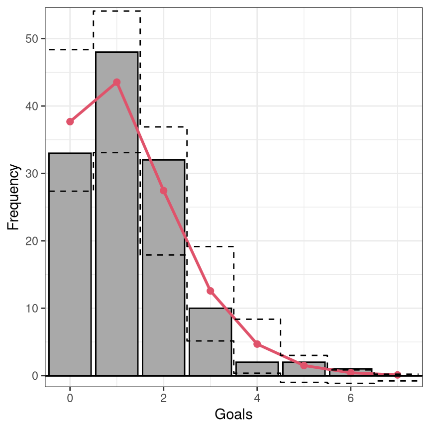
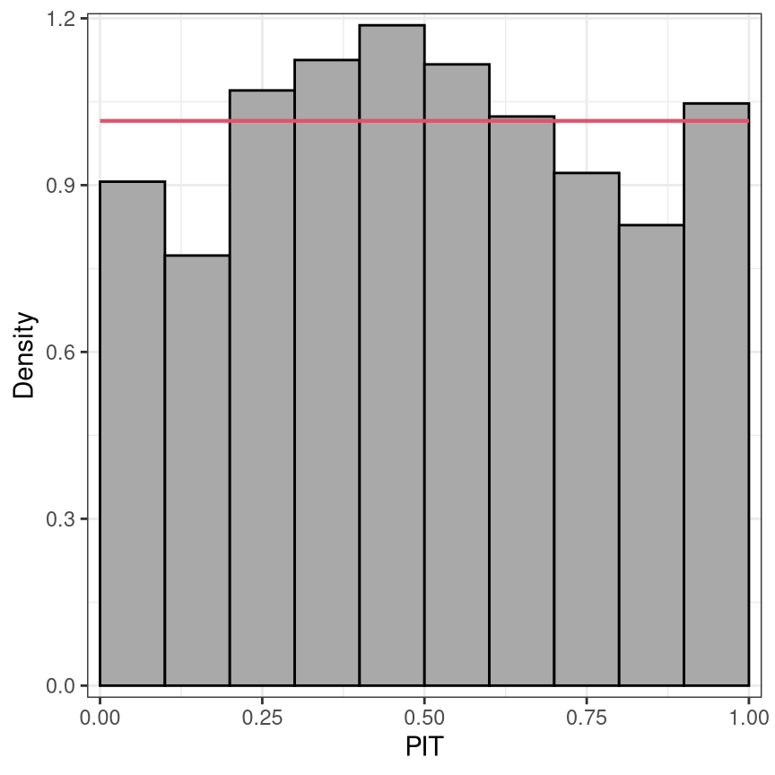

Goodness of Fit of Probabilistic Regression Models
goodness_of_fit.RmdIntroduction
Over the last decades there has been an increasing interest in regression models that not only capture the mean of a dependent variable but model its entire probability distribution (Stasinopoulos and Rigby 2007; Klein et al. 2015; Hothorn, Kneib, and Bühlmann 2014). In the simplest case this could be a generalized linear model (GLM, Nelder and Wedderburn 1972; McCullagh and Nelder 1989) where higher moments of the probability distribution co-vary with the expectation. Instead, multiple distribution parameters could also be linked to explanatory variables as in distributional regression (Klein et al. 2015) or generalized additive models of location, scale, and shape (Stasinopoulos and Rigby 2007). Moreover, many other flexible modeling techniques yield fitted distributions, including transformation models (Hothorn, Kneib, and Bühlmann 2014), Bayesian modeling (Umlauf, Klein, and Zeileis 2018), machine learning approaches (e.g., Rasp and Lerch 2018), and many others.
For assessing the goodness of fit of such probabilistic regression models, (proper) scoring rules (Gneiting and Raftery 2007) are widely used, e.g., using the log-likelihood (also known as the log-score) or the continuous ranked probability score (CRPS, Gneiting and Raftery 2007). In addition to such numerical summaries, visualizations capturing the goodness of fit are also of interest as they may also be able to shed some more light on the sources of a potential lack of fit.
While various visualizations have been suggested in the literature and implemented in software packages, a unified framework for these visualizations has not yet been established. Therefore, we investigate the following questions:
- What are useful elements of such visualizations?
- What are relative (dis)advantages?
The insights help us to establish a unified framework that facilitates:
- Adoption of these visualizations for a broad range of models/distributions.
- Understanding what the graphics have in common and what sets them apart.
- Demonstration of strengths and weaknesses in uncovering sources of lack of fit.
- Fine-tuning the graphics for certain models or data sets.
Notation
In this article, we focus on several graphical diagnostic tools to assess the calibration of a probabilistic forecast \(F( \cdot | \boldsymbol{\theta}_{i})\), issued in form of a predictive distribution \(f( \cdot | \boldsymbol{\theta}_{i})\). Given observations \(y_i (i = 1, \ldots, n)\), we assume a set of observation-specific fitted parameters \(\hat{\boldsymbol{\theta}}_{i} = (\hat{\theta}_{i1}, \ldots, \hat{\theta}_{iK})^\top\), where the estimation may have been performed on the same observations \(i = 1, \ldots, n\) (i.e., corresponding to an in-sample assessment) or on a different data set (i.e., corresponding to an out-of-sample evaluation). The estimation procedure itself can be either fully parametric or semi-parametric, as long as fitted parameters \(\hat{\boldsymbol{\theta}}_{i}\) exist for all observations of interest. However, since the uncertainty in the estimation of the parameters is not accounted for, small deviations from asymptotic theoretical properties will be apparent in all graphical displays due to some sampling variation.
According to the seminal work of Gneiting, Balabdaoui, and Raftery (2007), probabilistic forecasts aim to maximize the sharpness of the predictive distributions subject to calibration. Calibration here refers to the statistical concordance between the forecast and the observation, and is thus a joint property of the forecast and observation. Sharpness, on the other hand, is a property of the forecast only and indicates how concentrated a predictive distribution is. In general, the more concentrated the sharper the forecast. In the assessment whether probabilistic predictions are calibrated, we further distinguish between marginal and probabilistic calibration.
library("topmodels")
library("ggplot2")
data("FIFA2018", package = "distributions3")
m <- glm(goals ~ difference, data = FIFA2018, family = poisson)
rootogram(m, style = "standing", scale = "raw", fitted = FALSE, xlab = "Goals")
set.seed(0)
pithist(m, type = "random", nsim = 10,
ref = FALSE, confint = FALSE, simint = FALSE, fill = "darkgray", alpha = 1, col = "black")
set.seed(0)
pithist(m, type = "random", nsim = 10, trafo = qnorm,
xlim = c(-3, 3), xlab = "Randomized quantile residuals",
ref = FALSE, confint = FALSE, simint = FALSE, fill = "darkgray", alpha = 1, col = "black")
Marginal calibration: Observed vs. expected frequencies
Advantage: Scale of observations is natural, direct interpretation.
Disadvantage: Needs to be compared with a combination of distributions.
Marginal calibration is generally concerned with whether the oberseved frequencies match the frequencies expected by the model. For discrete observations, frequencies for the observations themselves can be considered; for continuous observations or more generally, frequencies for intevals of observations are being used. Here, the expected frequencies are computed by differences between the predictive CDFs \(F( \cdot )\), evaluated at the interval breaks. Hence, mariginal calibration is always obtained on the observation scale compared to the probabilistic calibration performed on the probability scale. Although there are some previous studies that display observation points rather than intervals (e.g., Gneiting, Balabdaoui, and Raftery 2007), here we stick to the former and discuss only the so-called rootograms which are histogram-style plots (Kleiber and Zeileis 2016).
For the special case of a binary event, the observed event frequency is typically plotted against the predictive probability in a so-called reliability diagram (Wilks 2011; Bröcker and Smith 2007). Here, the predicted probability for a binary event is partitioned into a certain number of bins and the averaged forecast probability within each bin is plotted against the observerd relative frequency. Typically, equidistant binning is employed, but here the rather arbitrary number of bins can be quite sensible. A simple and common enhancement is therefore to use evenly populated bins, though even here instabilities can be a major issue (Dimitriadis, Gneiting, and Jordan 2021).
Probabilistic calibration: PIT and (randomized) quantile residuals
Advantage: Needs to be compared with only one distribution (uniform or normal).
Disadvantage: Scale is not so natural. May require randomization for discrete distributions.
According to Gneiting, Balabdaoui, and Raftery (2007), model calibration can be further distinguished between probabilistic calibration and marginal calibration. Probabilistic calibration is usually assessed using probability integral transform (PIT) values (Dawid 1984; Diebold, Gunther, and Tay 1998; Gneiting, Balabdaoui, and Raftery 2007) or so-called PIT residuals (Warton, Thibaut, and Wang 2017). These are simply the predictive cumulative distribution function (CDF) evaluated at the observations
\[u_i = F(y_i | \, \hat{\boldsymbol{\theta}}_i),\]
where \(F( \cdot )\) denotes the CDF of the modeled distribution \(f( \cdot )\) with estimated parameters \(\hat{\boldsymbol{\theta}}_{i}\). PIT residuals have the desirable property, that if the model is a good approximation to the true data-generating process, i.e., the observation is drawn from the predictive distribution, the PIT residuals \(u_i\) are approximately uniformly distributed on \([0, 1]\) for continous predictive distributions \(F( \cdot )\). PIT residuals or variants have therefore been used extensively for model diagnosis and depending on their implementation are known under various names, among them forecast distribution transformed residuals (Smith 1985), randomized quantile residuals (Dunn and Smyth 1996), and universal residuals (Brockwell 2007).
In case of a discrete predictive distribution or a distribution with a discrete component, e.g., in case of censoring, \(u_i\) can be generated as a random draw \(\text{U}\) from the interval:
\[u_i = \text{U}[F(y_i - 1 | \, \hat{\boldsymbol{\theta}}_i), F(y_i | \, \hat{\boldsymbol{\theta}}_i)].\]
Here, we follow the definition by Dunn and Smyth (1996), but similar approaches have also been proposed in, e.g., Brockwell (2007) and Smith (1985). Again \(u_i\) is uniformally distributed, apart from sampling variability.
Since the PIT residuals are an iid sample from the standard uniform distribution, the PIT residuals can also be mapped to other distribution scales, e.g. to the standard normal scale, and should follow a standard normal distribution here. In the simplest case, the PIT residuals \(u_i\) can be plotted against the probabilities of a uniform distribution in so-called P-P plots (Wilk and Gnanadesikan 1968; Handcock and Morris 1999). However, it is far more common to transform the PIT residuals to the normal scale and compare them to the standard normal quantiles in a normal Q-Q plot (Hoaglin 2006). Alternatively, in a PIT histogram, the uniformally distributed PIT residuals are divided into intervals by a certain number of breakpoints and plotted in a histogram-style plot. Regardless of the graphical display, the PIT residuals are always on the probability scale, which might be transformed to the normal scale or another scale if preferred.
Similarities and differences
In the graphical displays for assessing the goodness of fit, several recurring elements can be seen:
PIT residuals are asymptotically uniformly distributed or transformed to another probability scale: The PIT histogram is on the uniform probability scale versus the normal Q-Q plot on the normal scale. Whereas, the transformation to the normal scale spreads the values in the tails further apart and thus better highlights possible discrepancies in the distribuional tails.
The marginal calibration is usually evaluated on the observation scale by checking whether observed and expected frequencies match. The rootogram, on the observation scale, is therefore especially useful for count data with values close to zero.
Discretization: Instead of plotting the raw values, e.g. PIT residuals, often some discretization improves readability of the graphical displays. The disadvantage here is that the breakpoint are often kind of arbitrary and certain misspecification might therefore be masked by plotting the values as intervals. For example, misscpecifications in the outer tails of the distribution are often not visible in PIT histograms, as the intervals are averaving over many data points; here, Q-Q plots are clearly superior. Another example is the reliabitiliy diagram, which can be quite instable when using equidistant binning.
The uncertainty due to the estimation of the parameters is not taken into account. Therefore, some sampling variation is seen in all graphical displays.